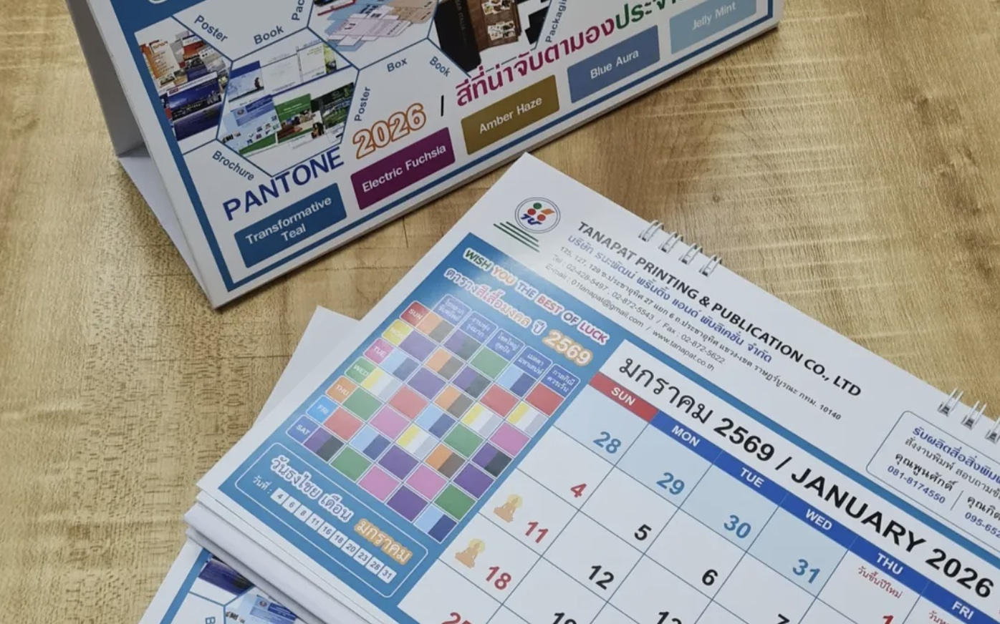

จะทำปฏิทินองค์กรปี 2570 เลือกแบบไหนดี, ต้องเริ่มเตรียมเมื่อไหร่, ต้องตรวจข้อมูลอะไรก่อนพิมพ์
เปรียบเทียบกับสื่ออื่นๆ ปฏิทินคือสื่อเดียวที่อยู่กับลูกค้าตลอด 365 วัน โฆษณาออนไลน์ในสื่อ Social เห็นแล้วเลื่อนผ่าน แต่ปฏิทินที่แขวนหรือตั้งโต๊ะ อยู่หน้าโต๊ะลูกค้าคือโลโก้ที่ถูกมองทุกวันโดยไม่ต้องจ่ายเพิ่ม
ปฏิทินมี 4 แบบ เหมาะกับใครบ้าง?
- ปฏิทินแขวน : เหมาะกับองค์กรที่อยากให้เห็นโลโก้จากระยะไกล เหมาะกับสำนักงาน, โรงงาน, ร้านค้า ต่างๆ จุดแข็งคือพื้นที่เยอะ รูปภาพใหญ่ ใช้เล่าเรื่องแบรนด์ได้
- ปฏิทินตั้งโต๊ะ : วางอยู่บนโต๊ะ อยู่ใกล้ในระยะสายตาและระยะมือ เหมาะกับลูกค้าที่ทำงานออฟฟิศ จุดแข็งคือมี 12 หน้าให้ใส่ข้อมูลสินค้า/บริการทีละเดือน
- สมุดไดอารี่/สมุดแพลนเนอร์ : เหมาะกับลูกค้าระดับ High-end ของขวัญที่ให้ความรู้สึกมีมูลค่า ใช้ได้นานกว่าและถูกพกติดตัวไปด้วย
- ปฏิทินพกพา/การ์ดปฏิทิน : เหมาะกับแจกจำนวนมากในงานอีเวนต์ หรือแนบไปกับสินค้า
ควรเริ่มเตรียมปฏิทินเมื่อไหร่?
ควรเผื่อระยะเวลาให้เหมาะสมกับงานตั้งแต่เริ่มงาน เพื่อที่จะไม่ให้เกิดการผิดพลาดหรือล่าช้า เพราะงานปฏิทินคืองานที่เลื่อนไม่ได้ ถ้าของถึงมือกลางเดือน ม.ค. ลูกค้าเกิดติดปฏิทินของเจ้าอื่นไปแล้ว ก็อาจจะไม่รับของเรา คุณค่าทั้งหมดจะหายไปเลย
ระยะเวลาที่ควรเริ่มงานปฏิทิน ประมาณเดือน
- ก.ย. : เลือกรูปแบบ กำหนดจำนวน สอบถามราคา อนุมัติงบที่ต้องใช้
- ต้น ต.ค. : สรุปคอนเซ็ปต์ + รวบรวมภาพที่จะใช้
- กลาง ต.ค. : ออกแบบ Artwork เสร็จ ตรวจสอบข้อมูลความถูกต้อง
- ปลาย ต.ค. : ส่งไปทำปรู๊ฟสี ตรวจสอบความถูกต้อง อนุมัติไฟล์สุดท้าย
- พ.ย. : เริ่มการผลิตและเข้าเล่ม
- ต้น ธ.ค. : ได้รับปฏิทิน พร้อมแจกก่อนสิ้นปี
ข้อมูลบนปฏิทินที่ต้องตรวจ (ห้ามพลาด)
- วันหยุดราชการปี 2570 : ต้องรอประกาศคณะรัฐมนตรีก่อน อย่าคัดจากปฏิทินปีเก่า และอย่าเดาวันหยุดชดเชย
- วันสำคัญทางศาสนา (มาฆบูชา วิสาขบูชา อาสาฬหบูชา เข้าพรรษา) : ยึดตามปฏิทินหลวง ไม่ใช่ปฏิทินจากอินเทอร์เน็ต
- วันพระ : ถ้าจะใส่ต้องตรวจทั้งปี เป็นจุดที่ผิดบ่อยที่สุด
- ปีนักษัตร : พ.ศ. 2570 คือ ปีมะแม (แพะ) ถ้าจะใช้เป็นธีมภาพต้องใช้ให้ถูก
- วันขึ้นปีใหม่ 2570 ตรงกับ วันศุกร์ มีผลกับการวาง Layout วันในตาราง
- พ.ศ. และ ค.ศ. : ถ้าลูกค้ามีคู่ค้าต่างชาติ ควรใส่ทั้งสองแบบ
เตือนอีกข้อ: ตัวเลขวันที่ผิดแค่ช่องเดียว = พิมพ์ใหม่ทั้งล็อต เพราะแก้เฉพาะหน้าไม่ได้
ออกแบบยังไงให้ลูกค้าอยากเก็บไว้
- เว้นที่ให้เขียน : ปฏิทินที่จดได้ถูกเก็บไว้นานกว่าปฏิทินที่สวยอย่างเดียว (ต้องใช้กระดาษที่ใช้ปากกาเขียนได้สะดวก ไม่เคลือบ เพราะการเคลือบมีผลกับการเขียนทับ)
- ตำแหน่งโลโก้ : ควรอยู่ตำแหน่งที่เห็นง่ายๆ แต่ไม่ใหญ่จนไปรบกวน คนไม่แขวนแผ่นโฆษณาไว้ในบ้าน แต่แขวนปฏิทินสวยที่บังเอิญมีโลโก้
- ขนาดตัวเลขและตัวอักษร : สำหรับปฏิทินแขวนต้องมีขนาดเหมาะสม เพราะต้องอ่านออกจากระยะ 2–3 เมตร
- แยกสีวันหยุดให้ชัด : ในระดับที่พิมพ์ออกมาแล้วยังต่างกันจริง ไม่ใช่ต่างกันแค่บนจอ
- ธีมภาพที่ใช้ได้ทั้งปี : ดีกว่าธีมที่ตกยุคแล้ว
วิธีเลือกกระดาษและวิธีเข้าเล่ม
- ปฏิทินแขวนต้องการกระดาษที่ไม่ม้วนงอเมื่อแขวนนาน
- ปฏิทินตั้งโต๊ะต้องการฐานที่ตั้งอยู่ได้จริงบนโต๊ะที่มีคนเดินผ่าน
- การเคลือบมีผลกับการเขียนทับ ถ้าลูกค้าต้องจดต้องเลือกให้เขียนได้
- ห่วงกระดูกงู ห่วงเดี่ยว หรือกาวหัว ต่างกันตรงความทนและความรู้สึกตอนพลิก
- งานที่ต้องใช้ทั้งปีควรเผื่อความแข็งแรงมากกว่าที่คิด
สรุป
สรุปสั้นๆ 3 ข้อ: ควรเริ่มเร็วกว่าที่คิด ตรวจวันที่ให้ครบ ออกแบบให้คนอยากเก็บ
ปล. สามารถส่งแบบ Artwork มาให้ทีมงานช่วยตรวจความถูกต้องก่อนผลิตได้